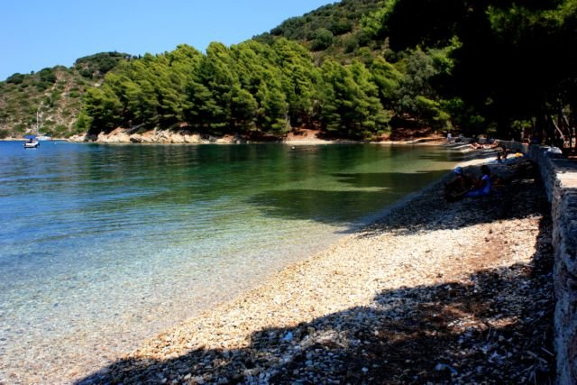

terenceithaque

Skinos est une plage d'Ithaque, située à 2 km de Vathy.
La plage est constituée de nombreux galets brillants.
La mer de la plage Skinos a des eaux cristallines et une couleur vert émeraude.
Nous continuons notre voyage par ici
En savoir plus sur Skinos sur Greeka (site en Anglais).
Vous cherchez le contenu d'une plage en particulier? Cliquez ici pour accéder à l'index des plages.
Vous n'êtes pas sur la page que vous cherchez? Dirigez vous vers l'index.
Vous vous posez des questions sur le contenu des mises à jour du site? Cliquez ici pour voir toutes les infos sur les mises à jour.